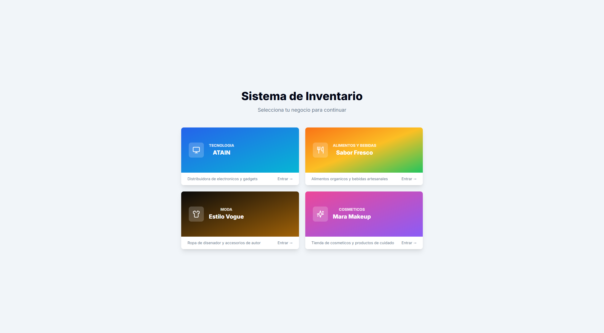
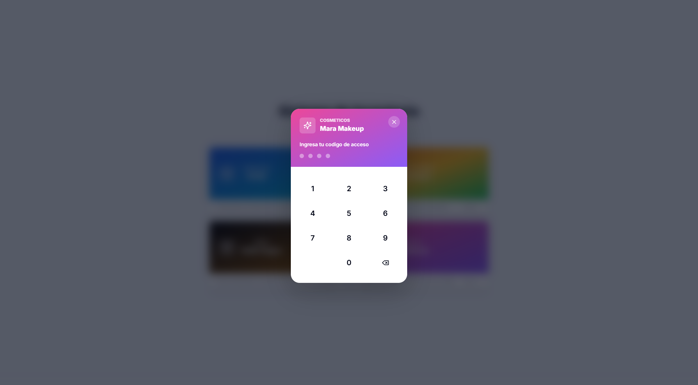
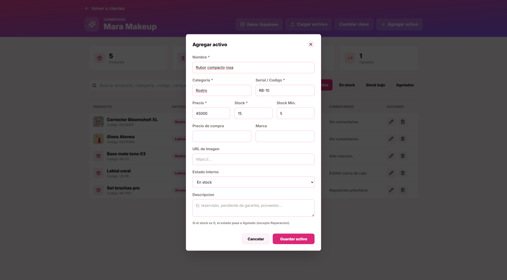
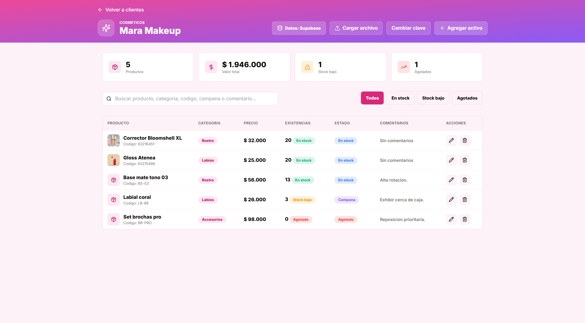

1. Introducción
Qué es el sistema y para qué sirve3
2. Cómo iniciar sesión
Seleccionar el negocio e ingresar el código de acceso (PIN)4
3. Cómo registrar un producto
Agregar un nuevo activo al inventario5
4. Cómo consultar información
Ver, buscar y filtrar los productos registrados6
Manual de Usuario · StocklyÍndice
1
Introducción
Conociendo el sistema
Stockly es un sistema web para el control de inventario de varios negocios desde
un mismo lugar. Cada negocio (ATAIN, Sabor Fresco, Estilo Vogue y Mara Makeup) maneja
su propio catálogo de productos o activos de forma independiente y protegida por un
código de acceso.
¿Qué permite hacer?
✓
Iniciar sesión por negocio mediante un código de 4 dígitos (PIN).
✓
Registrar productos con nombre, categoría, código, precio y existencias.
✓
Consultar el inventario con buscador, filtros y estadísticas en tiempo real.
✓
Editar o eliminar productos y ver alertas de stock bajo o agotado.
Requisitos: solo necesitas un navegador web (Chrome, Edge o Firefox)
y conexión a internet. No se instala nada en el computador.
Recomendación: mantén tu código de acceso en un lugar seguro y no
lo compartas con personas ajenas al negocio.
Manual de Usuario · StocklyPágina 3
2
Cómo iniciar sesión
Acceso al sistema
1
Abre la aplicación en tu navegador. Verás la pantalla “Selecciona tu negocio para continuar” con las tarjetas de cada negocio.
2
Haz clic en la tarjeta del negocio al que deseas ingresar (por ejemplo, Mara Makeup) o en el botón Entrar →.

Figura 2.1 — Pantalla inicial: selección del negocio.
3
Se abrirá la ventana “Ingresa tu código de acceso”. Digita tu PIN de 4 dígitos en el teclado numérico.
4
Al escribir el cuarto dígito, el sistema valida la clave y te lleva automáticamente al inventario del negocio.

Figura 2.2 — Ingreso del código de acceso (PIN).
¿Clave incorrecta? El sistema te avisará y podrás volver a intentarlo.
Usa el botón de borrar (⌫) para corregir un dígito.
Manual de Usuario · StocklyPágina 4
3
Cómo registrar un producto
Agregar un nuevo activo al inventario
1
Dentro del inventario, haz clic en el botón “+ Agregar activo” ubicado en la parte superior derecha.
2
Se abrirá el formulario “Agregar activo”. Completa los campos obligatorios (marcados con *):
Nombre, Categoría, Serial / Código, Precio y Stock.
3
Opcionalmente agrega Stock mínimo, Precio de compra, Marca, URL de imagen, Estado y una Descripción.

Figura 3.1 — Formulario de registro con datos de ejemplo.
4
Verifica la información y presiona “Guardar activo”. El producto aparecerá de inmediato en la lista del inventario.
Regla automática: si el stock es 0, el estado del producto cambia
automáticamente a “Agotado” (excepto cuando está en “Reparación”).
Importación masiva: también puedes cargar muchos productos a la vez
con el botón “Cargar archivo” usando un archivo CSV.
Manual de Usuario · StocklyPágina 5
4
Cómo consultar información
Ver, buscar y filtrar productos
Al iniciar sesión verás el panel de inventario del negocio con todos sus productos
y un resumen general en la parte superior.
1
Tarjetas de resumen: muestran el total de Productos, el Valor total del inventario, y las alertas de Stock bajo y Agotados.
2
Buscador: escribe un nombre, categoría, código, campaña o comentario para encontrar un producto al instante.
3
Filtros rápidos: usa los botones Todos, En stock, Stock bajo y Agotados para depurar la lista.
4
Acciones: con los íconos de cada fila puedes editar (✏️) o eliminar (🗑️) un producto.

Figura 4.1 — Panel de inventario: resumen, buscador, filtros y listado de productos.
Estados de color: cada producto muestra su estado (En stock,
Stock bajo, Campaña, Agotado) con una etiqueta de color para identificarlo rápidamente.